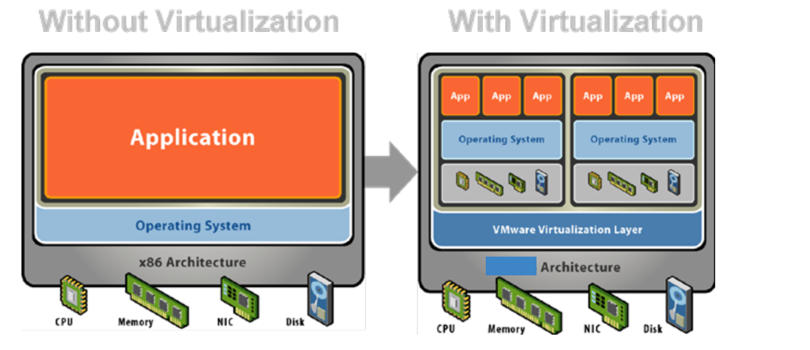
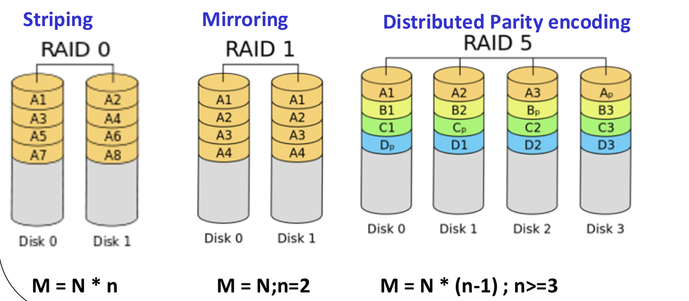
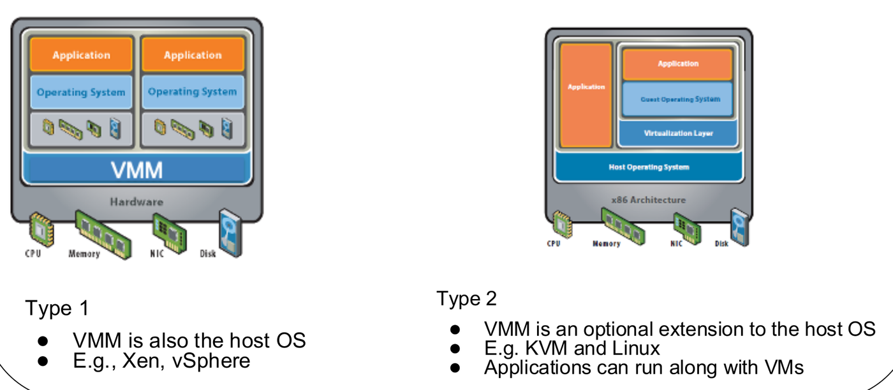
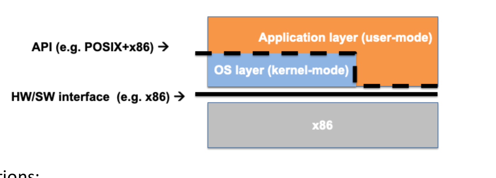
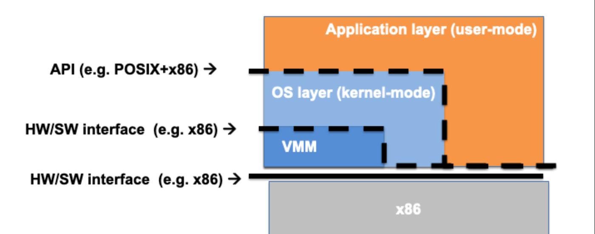

“Any problem in computer science can be solved by adding a level of indirection. But this usually creates another problem.” (David Wheeler.) Virtualization applies indirection to layering: a layer exports the same (compatible) abstraction as the layer it relies on, while hiding the physical names underneath. Hiding the physical names gives isolation, and the layer enforces modularity. It applies to CPUs, memory and disks, and taken to a whole computer it gives the virtual machine.
1. Why Virtualize the CPU
OS processes already share CPU cores: a core is given to a process for a time slot. Virtualizing the cores themselves lets us:
- share physical CPUs among several virtual machines (VMs) (as with multiprogramming, this raises resource efficiency);
- isolate workloads for security and performance (a cloud server runs jobs for tens to thousands of customers);
- run several operating systems on the same hardware.
2. The Three Virtualization Mechanisms
Write for the physical resource and for the virtual one.

| Mechanism | Mapping | Examples from the lecture |
|---|---|---|
| Multiplexing | One resource shared by many virtual entities | vCPUs on a physical core; memory |
| Aggregation | Many resources appear as one | The memory controller joins several DIMMs into one address space; RAID joins disks into one volume; link aggregation / multipathing joins network links into one faster virtual link |
| Emulation | One resource appears as a different one, in software | RAM disk (P = DRAM, V = disk for /tmp); Java VM (P =
x86-64/ARM, V = bytecode processor); Apple Rosetta (2006: P = x86-64, V
= PowerPC; 2020: P = ARM v8, V = x86-64); 127.0.0.1 (P =
none, V = an Ethernet interface); a serial port over USB or SSH |
Multiplexing vCPUs
- Each physical core can run any vCPU. The host OS schedules vCPUs onto cores (Linux treats vCPUs as processes).
- Inside each VM, the guest OS schedules its processes onto its vCPUs, as a normal OS does.
- A 4-core server can run 4 single-vCPU VMs, or 8 two-vCPU VMs. The second is CPU overcommitment; it works because not all VMs have running processes at the same time.
Aggregation: RAID

With disks of size , usable capacity :
| Level | Technique | Capacity | Notes |
|---|---|---|---|
| Striping (RAID 0) | Blocks spread across disks | Fast; no redundancy | |
| Mirroring (RAID 1) | Every block duplicated | , | Survives one disk failure |
| Distributed parity (RAID 5) | Data plus parity blocks spread across disks | , | Survives one disk failure |
Chapter 10 adds RAID 0+1 and 1+0.
3. Virtual Machines
A virtual machine applies the virtualization principle to a whole computer system: P = a computer, V = a computer.
Why VMs? They were popular in the 1960s–70s, when hardware was expensive and OSes were primitive. They came back after 2000:
- compatibility with the OS of choice;
- server consolidation;
- multi-tenancy (different owners on one machine);
- a VM is easier to provision than a real machine, so VMs are the foundation of the cloud.
Popek and Goldberg (1974): a VM is an efficient, isolated duplicate of the real machine. The virtual machine monitor (VMM, or hypervisor):
- is always in complete control of the system;
- uses the hardware directly, so programs show at most a minor decrease in speed.
Terminology
| Term | Meaning |
|---|---|
| Guest OS | An OS running inside a VM |
| Host OS | The OS running directly on the hardware, combined with the VMM (e.g. Linux with KVM) |
| Virtual memory | As commonly understood (chapter 8) |
| Guest physical memory | The “physical” memory the VM sees |
| Host physical memory | The real physical memory |
Type 1 vs. Type 2

| Type 1 | Type 2 | |
|---|---|---|
| Structure | The VMM is also the host OS | The VMM is an optional extension of a host OS |
| Lecture examples | Xen, vSphere | KVM with Linux |
| Host applications | None besides the VMs | Applications can run alongside the VMs |
(Other sources call KVM Type 1 and list VirtualBox or VMware Workstation as Type 2. Use the lecture’s examples in the quiz.)
Virtualization levels
| Full virtualization | Para-virtualization | |
|---|---|---|
| Guest OS | Runs unmodified, unaware of the hypervisor | Modified to use a special software interface (API) to the VM |
| Abstraction | Complete abstraction of the real hardware | The VM need not virtualize the hard-to-implement parts of the instruction set |
| Speed | More efficient | |
| Examples | VMware ESXi, Microsoft Virtual Server | Xen, VMware, XtratuM |
4. Constructing a VMM
The VMM both multiplexes and emulates:
- Multiplex CPU and memory, with hardware support. Each VM has its own vCPUs (P = core, V = core), which needs system-level limited direct execution. Each VM has its own guest physical memory, which needs hardware support for virtual memory.
- Emulate I/O devices: virtual disk, keyboard, screen, NIC, Ethernet switch.
Limited direct execution

On a bare-metal system:
- applications execute unprivileged instructions directly on the CPU;
- applications make system calls to the OS, entering kernel mode;
- privileged instructions are restricted to the OS (a user-mode attempt traps).

A VMM adds one level of indirection: the virtual CPU exposes the same hardware/software interface (e.g. x86-64) as the real CPU, so everything above keeps working. System-level limited direct execution is essential for efficiency:
- both the application and the guest OS run directly on the CPU;
- some privileged instructions issued by the guest OS trap to the VMM, which handles them.
vCPU recap:
- vCPUs are multiplexed in space (different VMs’ vCPUs on different cores) and time (many vCPUs on a few cores), much like kernel threads.
- Isolation comes from running the VM in non-root mode, with the host OS/VMM presumed correct (as the OS is presumed correct for processes).
- The basic mechanism is limited direct execution, extended from applications only to the whole system.
The “modern” and “emerging” landscape slides (GPU virtualization for generative AI) are not examinable.
Tutorial 7 Q1(b)–(d): Hypervisor and guest OS roles
Question: Indicate whether the following statements are true or false. Justify your answers. (b) A guest OS abstracts H/W and provides an interface between H/W and hypervisor. (c) Managing the interactions between a guest OS and its applications is one of the key functions of a hypervisor. (d) Under a Type-1 para-virtualized hypervisor, the hypervisor directly interacts with the H/W and provides a virtual call API to interact with the guest OS.
Answer (my working; Tutorial 7 solutions are not out yet):
- (b) False. The roles are swapped: the hypervisor abstracts the hardware and gives each guest OS an interface to it.
- (c) False. The guest OS manages its own applications, as a normal OS does. The hypervisor manages the VMs and their access to the hardware.
- (d) True. A Type 1 VMM is the host OS, so it runs directly on the hardware; under para-virtualization the guest OS is modified to call the hypervisor through an API.
Tutorial 7 Q2: Designing a virtualized environment
Question: You are tasked with setting up a virtualized environment to run a variety of workloads, including data processing (heavyweight) applications and web servers (lightweight), on a number of physical servers. The goal is to maximize performance and resource utilization while ensuring flexibility across different workloads.
Discussion (my working; open-ended, no posted answer yet):
- Hypervisor type: Type 1. The VMM is the host OS and runs directly on the hardware, with no general-purpose host OS taking resources. Type 2 suits a desktop that also runs ordinary applications.
- Virtualization level: para-virtualization where the guest OSes can be modified (more efficient); full virtualization where unmodified guests are needed (more flexible).
- CPU multiplexing: give heavyweight data-processing VMs dedicated vCPUs (no overcommitment, predictable performance). Overcommit vCPUs for lightweight web servers, which are rarely all busy at once.
- Memory and I/O: each VM gets its own guest physical memory; disks can be aggregated (RAID) for throughput and reliability; devices are emulated per VM.
- Flexibility: because each VM is isolated and easy to provision, VMs can be added, resized or moved between physical servers as the workload changes.